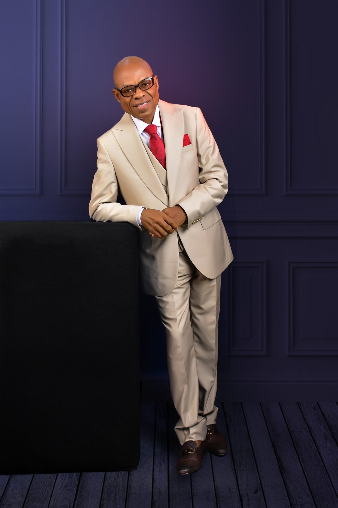

For Ezra had prepared and set his heart to seek the Law of the Lord, and to do and teach in Israel its statutes and its ordinances.
— Ezra 7:10
Equipping the saints for spiritual maturity and fruitfulness — so that what we teach flows first from who we have become.

Equipping the saints for spiritual maturity and fruitfulness.
The incarnational power of the gospel message — demonstrated first in Christ Jesus — is at the heart of the Christian faith. The fleshing out of God's living Word as a lifestyle is one of the most distinguishing elements of Christianity.
It is reflected in the very etymology of the term Christian; from "the Word became flesh and made his dwelling among us" to "it was in Antioch that the followers of Christ were first called Christians" (John 1:14; Acts 11:26).
All religions hold out as an ideal — love, goodness, and holiness. But it is only the Christian faith that is able to produce it in real life experience. What does not take its root from the depth of our being is neither sustainable nor characteristic of us as Christ-ians.
The Ezra Centre exists to stir the heart of Christ's disciples toward an enduring, prioritized yearning and pursuit of authentic transformation into Christlikeness — from the core outward.
Our work flows from a simple pattern modeled by Ezra the priest, personified in Christ, and carried through every faithful disciple since.
The Word, when it enters the heart, reconfigures the inner man — the core of our being — from which all true ministry flows. We prioritize formation over performance.
Practical, behavioral conduct must precede and be prioritized over teaching, preaching, and evangelism. "All that Jesus began to do and teach" (Acts 1:1).
Only from a transformed life does gospel proclamation become life-giving and life-changing. We equip saints to teach from the overflow of who they have become.
Like Ezra the priest, we believe the calling of every Christian leader is to first prepare and set the heart — to seek the law of the Lord, to do it, and only then to teach it in Israel.
This is the pattern personified in Christ and the pattern we pursue at The Ezra Centre. The Founder's burden is that the Church of our generation would rediscover this incarnational order: being, doing, teaching — in that sequence, never reversed.
Read the full story →The work of discipleship is neither fast nor flashy. It requires patient, sustained investment in the hidden work of the heart. Your partnership makes this work possible — in lives, in communities, and across generations.
Stand with us as we labor to see the Church formed from the core.
Become a Partner →Why the sequence — prepare, seek, do, teach — is not incidental, but essential to every sustainable ministry.
The Christian life is not performance. It is overflow. A reflection on the hidden work of the heart.
On incarnation as the defining pattern of Christian faith — and why it must shape how we disciple.